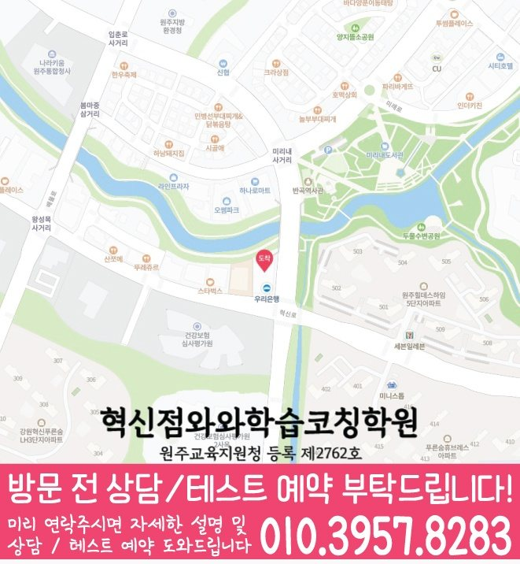

국어 수업 가능 학년
상담 시 가능 학년 확인
ACADEMIC SUPPORT LOCAL GUIDE
원주혁신도시 보습 수업을 비교할 때 살펴볼 학교 진도, 복습·과제·오답 관리, 학년별 수업 정보와 상담 기준을 안내합니다. 센터 위치와 등원 기준도 함께 안내합니다.
30초 핵심 안내
결론부터 말하면, 강원 원주시 원주혁신도시에서 보습학원을 찾는 학습 의지는 꾸준히 보이지만 모르는 부분을 질문으로 바꾸지 못하는 학생에게는 진도를 빠르게 늘리는 곳보다 현재 학년의 빈틈을 진단하고 복습·과제·오답을 한 흐름으로 관리하는 곳이 더 현실적입니다. 상담에서는 학원설명회를 포함해 수업 방식, 피드백 주기, 결석 처리와 실제 등원 동선을 구체적으로 확인해야 합니다. 원주혁신도시 페이지에 제공된 수업 주소는 강원특별자치도 원주시 입춘로 110 파라다이스프라자 305호이며, 이 위치가 학생의 학교·가정 일정과 맞는지가 선택의 첫 조건입니다.
원주혁신도시은 수업 가능 생활권 기준입니다. 실제 방문 센터는 와와학습코칭센터 혁신점이며, 주소와 등록 정보는 아래 센터 기준 정보에서 확인할 수 있습니다.
상담 시 가능 학년 확인
초3 · 초4 · 초5 · 초6 · 중1 · 중2 · 중3 · 고1 · 고2
초4 · 초5 · 초6 · 중1 · 중2 · 중3 · 고1 · 고2


센터 기준 정보
센터명·주소·등록 정보와 교습비 확인 경로를 상담 전에 살펴볼 수 있도록 정리했습니다.
강원 원주시 원주혁신도시 상담 기준
강원특별자치도 원주시 입춘로 110 파라다이스프라자 305호
원주교육지원청 등록 제2762호
실제 수업 가능 시간은 학년·과목별 일정에 따라 상담에서 확인합니다.
동네명은 수업 가능 지역을 찾기 위한 안내 기준입니다.
버들초 · 반고초
버들중 · 반곡중
센터명·주소·등록번호·가능 학년·학교 참고 정보는 제공된 센터 자료를 기준으로 정리했으며, 실제 수업 범위와 일정은 상담에서 다시 확인합니다.
지역별 학습 안내
학생의 과목별 학습 상황과 상담 전에 확인할 기준을 여섯 가지 주제로 나누어 정리했습니다.
학습 의지는 꾸준히 보이지만 모르는 부분을 질문으로 바꾸지 못하는 학생은 “공부를 안 한다”는 한 문장으로 설명하기 어렵습니다. 원주혁신도시 상담에서는 정답률, 풀이 시작까지 걸리는 시간, 질문 빈도, 과제 미완료 이유를 나누어 확인해야 원인을 잘못 판단하지 않습니다. 원주혁신도시에서 우선 적용할 방법은 모르는 지점을 표시하고 자신의 말로 질문 문장을 완성하는 연습입니다. 강원 원주시 원주혁신도시 학생은 현재 학년 내용을 자신의 말로 설명하고 비슷한 문제를 혼자 풀 수 있는지를 확인한 뒤 다음 진도를 정하는 편이 안전합니다.
제공 자료에서 원주혁신도시 수업학교로 버들초, 반고초 등이 안내되어 있습니다. 원주혁신도시 학부모는 이 명칭만으로 특정 시험 일정이나 범위를 가정하지 말고 학생이 실제로 받은 안내 자료를 출발점으로 삼아야 합니다. 강원 원주시 원주혁신도시의 현재 학년 진도, 수행 과제, 이전 시험 오답과 남은 기간을 한 표에 넣으면 학교 대비와 누적 복습의 비중을 조정하기 쉽습니다. 원주혁신도시 페이지는 제공된 수업학교 외의 이름을 추가하지 않으며 다른 학교의 수업 가능 여부는 상담에서 확인하도록 안내합니다.
원주혁신도시 보습학원을 비교할 때 수업의 질은 설명 시간보다 학생에게 남는 행동으로 확인할 수 있습니다. 원주혁신도시 수업의 권장 흐름은 짧은 사전 확인, 핵심 개념 설명, 학생의 독립 풀이, 오류 원인 분류, 답을 가린 재풀이, 다음 수업의 재점검입니다. 특히 학습 의지는 꾸준히 보이지만 모르는 부분을 질문으로 바꾸지 못하는 학생에게는 모르는 지점을 표시하고 자신의 말로 질문 문장을 완성하는 연습을 수업과 과제에 반복해 연결해야 합니다. 원주혁신도시에서는 과제량이 많은지 적은지보다 정해진 시간 안에 시작했는지, 막힌 문제를 표시했는지, 채점 뒤 다시 풀었는지로 판단하는 편이 정확합니다.
“학원설명회”를 평가할 때는 학원 내부 용어보다 학부모에게 보이는 절차를 살펴야 합니다. 원주혁신도시의 학원설명회 관련 안내에서는 상담 내용이 수업 계획으로 이어지는지, 일정 변경과 결석이 기록되는지, 과제·오답 피드백이 담당자 사이에서 끊기지 않는지를 질문하십시오. 원주혁신도시에서 오래 다닐 보습학원을 찾는다면 담당자가 바뀌어도 같은 기준이 유지되는지가 중요합니다. 결과를 과장하는 설명보다 학생 자료를 근거로 무엇을 조정했는지 보여 주는 운영이 학원설명회의 실질적인 답입니다.
검색 기준 지역은 강원 원주시 원주혁신도시이지만 제공된 학원 주소는 강원특별자치도 원주시 입춘로 110 파라다이스프라자 305호이므로 동네 키워드만으로 거리를 판단해서는 안 됩니다. 원주혁신도시 학생의 귀가 시간을 기준으로 학생이 실제로 출발하는 곳이 학교인지 집인지에 따라 체감 이동은 달라지므로 요일별 출발 지점을 따로 적어 보십시오. 원주혁신도시에서 가장 바쁜 요일을 놓고 보면 학교 수업이 늦는 날, 과제나 동아리 일정이 있는 날, 보호자 픽업이 어려운 날을 구분해 등원 가능 시간을 계산해야 합니다. 원주혁신도시에서 가장 바쁜 요일에도 지속 가능한지가 가까워 보이는 인상보다 중요한 선택 기준입니다.
상담 준비의 출발점은 원주혁신도시 학생의 최근 자료와 생활 시간을 한 장에 정리하는 것입니다. 원주혁신도시 학부모가 답변을 기록할 때는 최근 시험이나 확인 문제, 틀린 교재, 학교 과제, 공부 가능한 요일을 제시하고 질문 표현이 어려운 문제를 교사가 어떻게 진단하는지 들어 보십시오. 원주혁신도시에서 질문을 준비할 때는 수업 방식, 반 편성, 결석·보강, 과제량, 오답 재확인, 학부모 연락과 비용 기준을 항목별로 적으면 설명을 감정이 아니라 정보로 비교할 수 있습니다. 강원 원주시 원주혁신도시 학부모가 비교할 때는 최종 결정에서는 성적을 보장하는 문구보다 학생이 실제로 실행할 수 있는 첫 주 계획과 수정 기준이 제시되는지를 보아야 합니다.
FAQ
원주혁신도시 페이지에 제공된 주소는 강원특별자치도 원주시 입춘로 110 파라다이스프라자 305호입니다. 원주혁신도시에서는 학교에서 출발하는 날과 집에서 출발하는 날을 나누고, 가장 늦은 요일의 수업 종료·귀가 시간과 편의 서비스 제공 여부를 확인해야 합니다.
원주혁신도시 페이지에 제공된 학교 정보는 버들초, 반고초입니다. 원주혁신도시 내신 계획은 학교명보다 실제 교과서·범위표·평가 일정에 맞추어야 하며, 제공 목록에 없는 학교의 수업 여부는 상담에서 다시 확인해야 합니다.
원주혁신도시 학생의 결과는 출발점과 시험 조건, 학습 기간에 따라 달라지므로 구체적인 성적 상승 수치를 미리 약속할 수 없습니다. 원주혁신도시 학생은 막힌 부분을 표시한 뒤 구체적인 질문으로 표현하는 빈도 같은 과정 지표와 학교 평가를 함께 추적하며 계획을 조정하는 설명이 더 현실적입니다.
학습 의지는 꾸준히 보이지만 모르는 부분을 질문으로 바꾸지 못하는 학생이라면 현재 학년의 빈틈을 나누어 보고 모르는 지점을 표시하고 자신의 말로 질문 문장을 완성하는 연습을 실제 수업과 과제에 연결하는지를 우선 확인하는 편이 좋습니다.
원주혁신도시 상담에서는 상담 내용이 수업 계획으로 이어지고 일정·결석·과제·오답 기록이 담당자 사이에서 끊기지 않는지 물어보십시오.
상담 상황 예시
다음 상담 장면은 실제 후기가 아니며, 원주혁신도시 보호자가 학생 일정과 학습 기준을 비교하도록 만든 예시입니다.
원주혁신도시의 등원 위치와 수업 종료 후 일정을 한 주표에 적어 보니 제공 주소가 생활 리듬에 맞는지 차분히 판단할 수 있었습니다. 원주혁신도시에서는 학원설명회도 조건과 확인 방법을 구분해 메모하니 할인이나 홍보 문구에만 흔들리지 않았습니다.
원주혁신도시에서 여러 보습학원을 비교하면서 교재명만 들었을 때보다 수업 전 진단, 혼자 풀이, 오답 재확인 순서를 들었을 때 차이를 알기 쉬웠습니다. 원주혁신도시에서 아이에게는 모르는 지점을 표시하고 자신의 말로 질문 문장을 완성하는 연습이 필요하다는 설명을 듣고, 집에서는 과도하게 개입하기보다 실행 여부만 확인할 수 있었습니다.